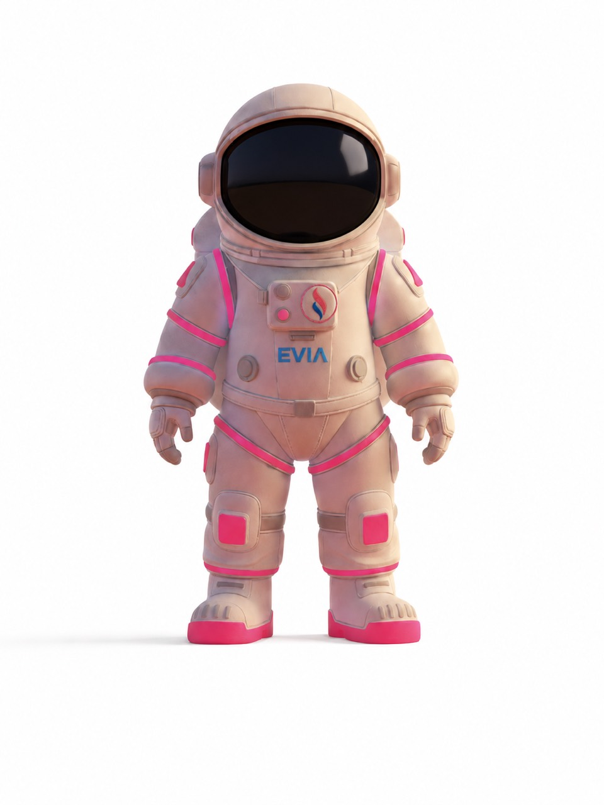

EFY SEGUROS · TU MEJOR ELECCIÓN
Elegir bien.
Vivir con
tranquilidad.
Elegir un seguro empieza por entenderlo.
Conoce Efy y encuentra el próximo paso para ti.
Una nueva experiencia de Efy, desde Quito.
EVIA, dando forma a nuestro universo digital.
A TU RITMO
La información que necesitas.
Un lugar para encontrarla.
SERVICIOS
Empieza por lo que quieres proteger.
Conoce nuestro apartado de seguros y qué revisar antes de elegir.
CONÓCENOS
Conoce el mundo de Efy.
Nuestra identidad, lo que nos mueve y EVIA, nuestra guía digital.
SOCIOS ESTRATÉGICOS
Las aseguradoras con las que trabajamos.
Un espacio para conocer a nuestros socios estratégicos.
RESEÑAS
La experiencia de nuestros clientes.
Un espacio para sus opiniones sobre Efy.
AYUDA
Entiende antes de decidir.
Respuestas sobre coberturas, deducibles y conceptos de tu póliza.
SINIESTROS
Reporta lo ocurrido.
Envía los datos del evento y sus adjuntos al equipo de siniestros de Efy.
CONTACTOS
Encuentra tu siguiente paso.
Prepara tus preguntas y conoce los canales de atención de Efy.
CONOCE A EVIA
Una guía cercana.
Para preguntas reales.
EVIA te ayuda a encontrar información general sobre seguros y a organizar lo que quieres consultar.
